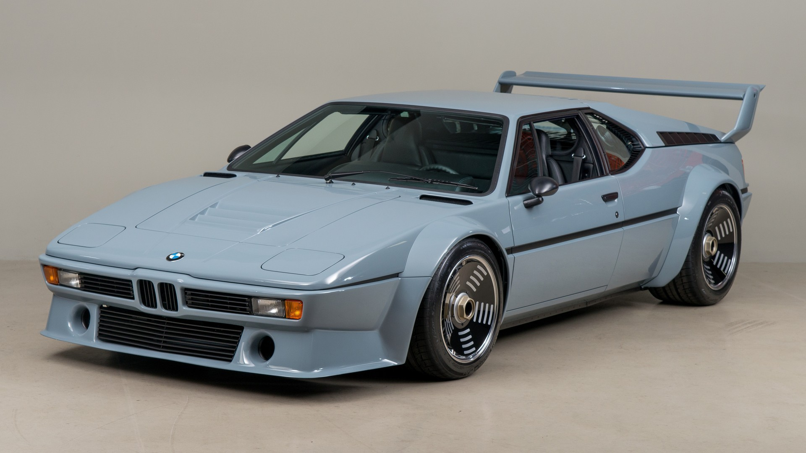

The BMW M1 (model code E26) is a mid-engined sports car produced by German automotive manufacturer BMW from 1978 until 1981. In the late 1970s, Italian automobile manufacturer Lamborghini entered into an agreement with BMW to build a production racing car in sufficient quantity for homologation, but conflicts arose that prompted BMW to produce the car themselves.[2][3] The resulting car was sold to the public, from 1978 until 1981, as the BMW M1. It is the first mid-engine BMW automobile to be mass-produced; the second is the i8 plug-in hybrid sports car.
1. Design by Giorgio Giugiaro
2. Performance-oriented mid-engine concept
3. Max. output: 277 hp (250 kW)
4. Max. speed: 265 km/h
5. 460 models were built